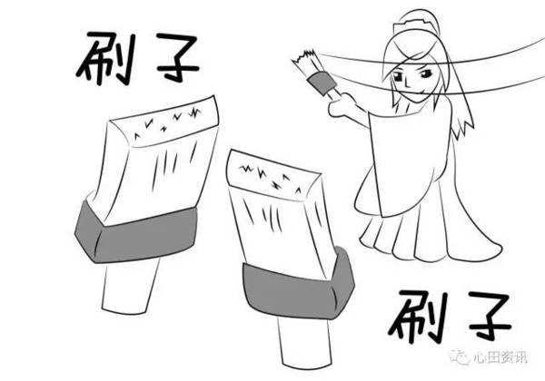
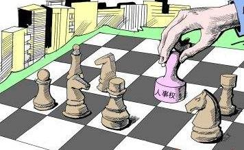

做管理，必须有两把刷子！
大家都知道，管理就是通过别人做事并达成预定目标。这句话说起来很简单，但真正做起来，也不是那么容易。
首先，达成预定目标就是要有结果，也就是说，到了时间节点，你必须把成绩摆在那里，等着上级给你的考卷打分；其次，通过别人做事，考验的是执行力，不过话又说回来了，别人凭什么要听你的，难道就因为你是经理，单凭“官大一级压死人”，这年头，尤其是在企业里，甭管你的Title有多大，也不见得就那么好使。做过管理的都知道，这样简单粗暴，总会有人不买账的，到时候事干不成不说，上级还会怀疑你的领导能力，最可能的结果就是弄得自己里外不是人。
当然，这不是我们管理者想要的，更不是我们做管理的目的。每个管理者都希望结果是好的，同时自己也能凝聚团队一起做好高效执行。既好吃又好看，两全其美，这是每个管理者都努力追求的管理境界。要达到这样的理想状态，必须承认，管理者需要做很多，有时候还需要点运气，但最需要的是什么呢？
经过多年的管理经验和教训总结，我个人认为，甭管Title有多大，管理者必须有两把刷子，没有这两把刷子，你的管理就很虚，很难落地！
那么，又是哪两把刷子呢？我们不妨先看个笑话，叫《家中的权力》 ：
话说有一哥们，常在小区邻居面前炫耀自己是家里的一把手，掌握着三把钥匙，老婆无权过问。邻居听后笑着问他老婆：“他说的是真的吗？”
他老婆说：“一点不假。我家有四把钥匙，他拿着三把：一把是开猪圈门喂猪的，一把是开鸡窝门喂鸡的，一把是开厨房门做饭的，只有一把存放现金的保险箱钥匙由我掌握，他从不干预。
做管理，必须有两把刷子！
这个笑话很简单，聪明的朋友一眼就看出来了，保险柜里有现金，代表着财权，也就是我们企业管理计划中常说的预算。这就是我说的第一把刷子，做管理，必须要有财权。当然，财权有大小，部门小，财权小，哪怕只有一分钱，也要说了算。这是为什么呢？因为，管理者通过别人做事，激励是少不了的，没有银子，拿啥激励？光靠嘴说，那是忽悠。大家都知道“忽悠”的后果是什么。
那么第二把刷子是什么呢？

做管理，必须有两把刷子！
我们在看一下上面笑话里的这个哥们，有三把钥匙，开猪圈喂猪、开鸡窝门喂鸡，开厨房门做饭，这是事权；做管理光有做事的权力是不行的，还要有什么呢？这就是我要说的第二把刷子：人事权！大家都知道，选、用、育、留四项是管理者的抓手，如果一个管理者只能带大家干事，对人的去留，选用说了不算；干事就会大打折扣，结果也就可想而知。
总之，甭管Title有多大，没有这两把刷子，你的管理难落地！做管理，必须有两把刷子！管理层级有高有低，财权预算有多又少，这不重要，重要的，做管理，要干事，想干成事，人事权和财权必不可少，这是我的观点，也是我多少年管理经验和教训的总结。对与不对，欢迎各位朋友交流讨论，一起丰富，找到最重要的刷子，多加几把刷子，也是为了更好的做事，做好事，对企业、对部门、对个人都有好处，希望大家积极反馈，共同完善，推动实战管理高效实用！